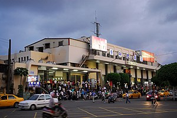
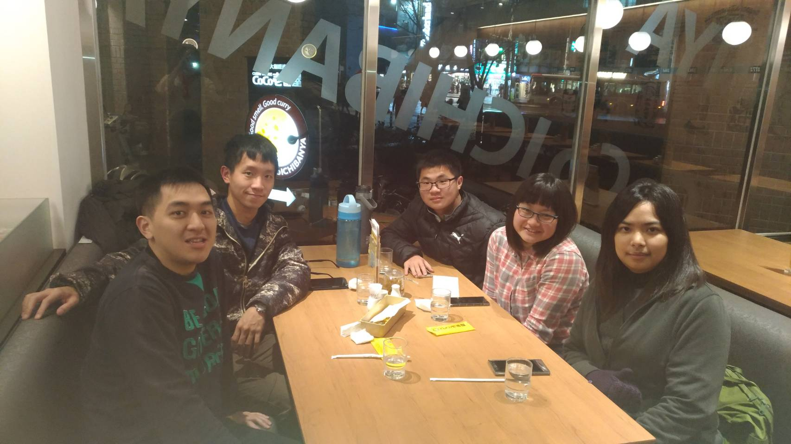
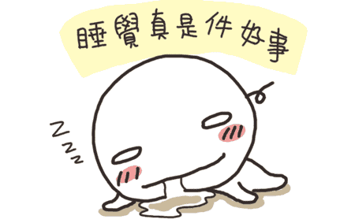
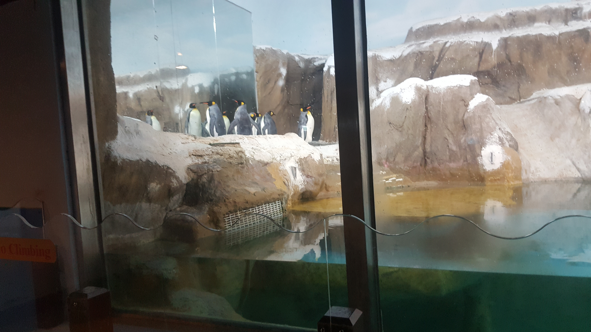
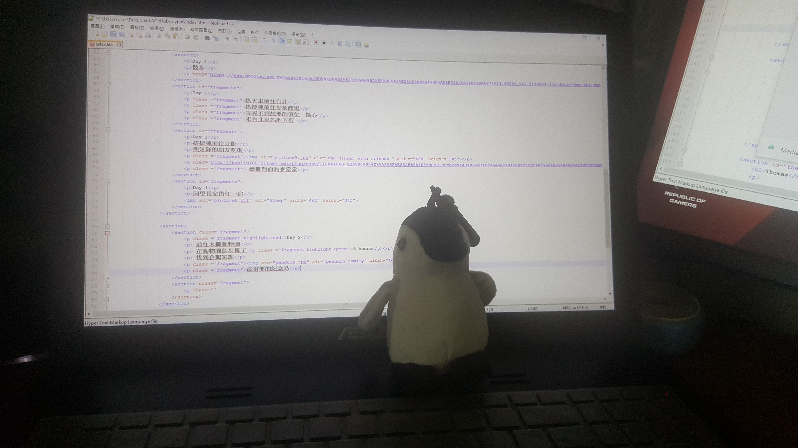
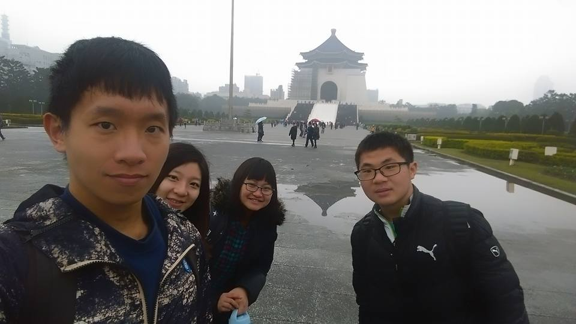

You can select from different transitions, like:
None -
Fade -
Slide -
Convex -
Concave -
Zoom
Day 1
早上09:17搭乘自強號
中午12:07到達中壢 好冷

Day 1
午餐和資工系的朋友
Day 1
散步
中壢 NovaDay 1
搭火車前往台北
搭捷運前往光華商場
找尋不到想要的價位 傷心
逛台北車站地下街
Day 1
搭捷運前往公館
與泳隊的朋友 去公館吃飯
COCO 嘎裡飯
Day 1
續攤對面的麥當當
回學長家借住一宿

Day 2
前往木柵動物園
在動物園徒步逛了
3 hours
找到企鵝家族

最重要的紀念品

Day 2
與泳隊朋友 前往國際書展
台北國際書展Day 2
與泳隊朋友 去西門町吃飯
第一站 謝謝魷魚羹
第二站 賽門甜不辣
第三站 楊記花生玉米冰
Day 2
第一次的網咖過夜之旅
qtime 台北京站店Day 3
前往新店和泳隊朋友欣賞翱翔於空中的鳥類,第一次拿望遠鏡賞鳥。
看到魚鷹
在新店市集買點心
新店捷運站Day 3
前往中正紀念堂
